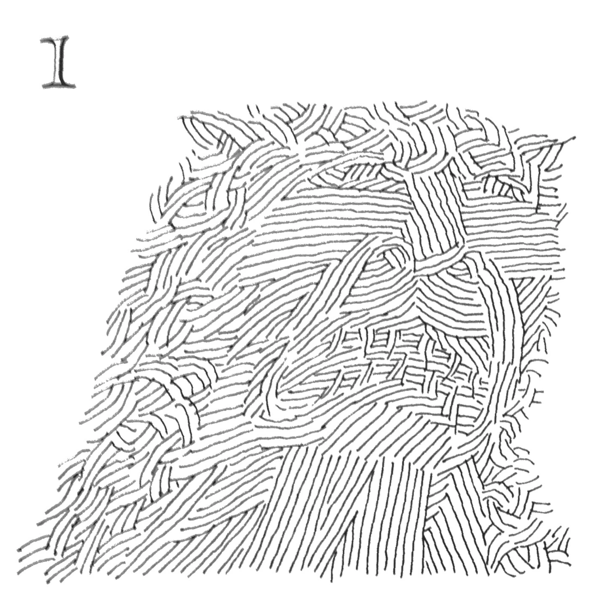

Runish
Designed by Jack Keenan
Working Specimen
Aa Bb Cc Dd Ee Ff Gg Hh Ii Jj Kk Ll Mm Nn Oo Pp Qq Rr Ss Tt Uu Vv Ww Xx Yy Zz
0 1 2 3 4 5 6 7 8 9
. , - ' " : ; ! ?
Cultural Significance
The embodiment of a ye olden aesthetic, Runish represents a synthesization of early English typefaces. Its sharp thick edges, as if carved with a wood chisel, parallels that of the original Blackletter woodblocks for the Gutenberg press. Its strict adherence to a hexagonal construction in the vein of Tunic's writing system for its runes, only to have a slew of exceptions very much akin to English's grammar. The little touches of idiosyncrasies within the characters themselves, like the upper case T's pronounced crossbar or the j's jagged edges, produces a unique and distinguished quality akin to philosophy of Royal Romain (“The King's Font”). Runish, at the end of the day, ruminates on English's clashing syncretic cultural history (hodge-podginess in English) and distills it into a functionable font.
Visual Inspiration
